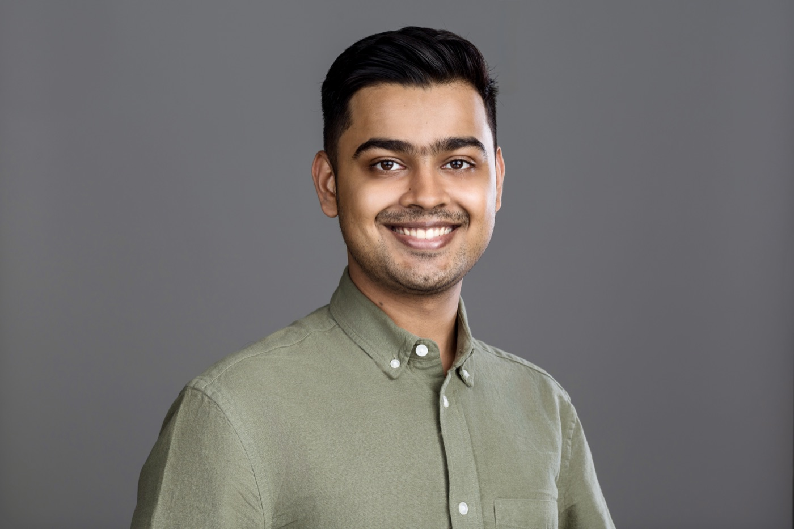
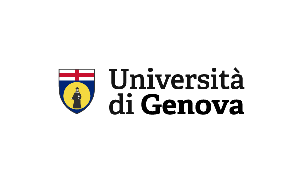

A working outline for exploring training cost, sampling, and transfer learning.
DOCTORAL RESEARCHER · INSTITUTE OF GEOSCIENCES · KIEL
Waves reveal.
Physics explains.
I work on scientific machine learning and neural solvers for differential equations, with a focus on elastic waves and concrete non-destructive testing.
CAUChristian-Albrechts-Universität zu Kiel
Institute of Geosciences
Institute of Geosciences
INSIDE CONCRETE / WAVE-BASED NDTANIMATED SCHEMATIC
Incident waveScattered waveConcrete cross-section
A defect scatters the wave, adding a later arrival at the receiver.
Conceptual animation, not a PDE simulation or an FWI reconstruction.
ABOUT ME & CURRENT RESEARCH
Listening to concrete.
Scientific machine learning for structural health monitoring.

Hey, I’m Hannan.
I work at the Institute of Geosciences at Kiel University, where I am pursuing my PhD under the supervision of Prof. Dr.-Ing. Frank Wuttke.
Before this, I completed an MSc in Computer Science at the University of Genoa. My master’s thesis on physics-informed neural networks for wave dynamics was supervised by Prof. Frank Wuttke and Prof. Lorenzo Rosasco.
I am interested in scientific machine learning and neural solvers for differential equations, particularly wave problems with applications in structural health monitoring and non-destructive testing.
RESEARCH EXPLAINED / SEND WAVES → LISTEN → LOOK INSIDEHOW IT WORKS
01Send a pulseWaves enter the concrete
02Predict the wavesUse a virtual structure
03Listen and compareCheck the real recording
04Improve the pictureAdjust the virtual structure
Then try again ↺Predict, compare and adjust: each round aims to make the virtual structure better explain what the sensors hear.
WHAT THE SENSORS HEAR
WHAT THE COMPUTER PREDICTS
DO THEY MATCH?Compare the wave shapesDifferences help guide the next adjustment.
Learning about the inside from waves on the outside. Full waveform inversion (FWI) adjusts the virtual structure to better explain the recordings. Wavefield reconstruction inversion (WRI) also gives the predicted waves room to adjust along the way. Both use repeated comparisons to work towards a better picture.
THINKING IN PUBLIC
The research notebook.
Small experiments, useful ideas, and things learned along the way.
This note is a draft. Results and code will accompany the published post.
FROM EQUATIONS TO THE FIELD
Selected work.
Research with physical meaning. Engineering with practical purpose.
RESEARCH / PUBLICATION · 2024PINNs for high-frequency
Connected power
Vaccine facility
PINNs for high-frequency
and multi-scale problems
Exploring transfer learning for physics-informed neural networks.
Scientific ML · Wave modellingRead paper ↗
ENGINEERING / IoTConnected power
monitoring
Non-invasive current sensing with Particle Argon and Boron, dynamic sampling, and buffered cloud uploads.
Particle · C++ · SensorsView project ↗
ENGINEERING / IoTVaccine facility
monitoring
A Particle Boron device for monitoring vaccine storage facilities.
Particle Boron · Remote monitoringView project ↗
PAPERS / METHODS & RESULTS
Research in print.
Published work, preprints, and conference contributions.
Physics-Informed Neural Networks for High-Frequency and Multi-Scale Problems Using Transfer Learning ↗
Train on a lower-frequency problem, then fine-tune toward harder cases. We studied this strategy on a damped harmonic oscillator and a one-dimensional wave equation.
Key results and context
0.037%
Relative L₂ error
Transfer learning in the oscillator benchmark at ω = 40, compared with 0.80% for Adam training from scratch (Table 1).
600 vs 1,000
Training epochs
For the 1D wave case at c = 1.5, transfer learning reached a loss of order 10⁻⁵ in 600 epochs, versus 1,000 without transfer (Figure 9g).
0.05%
Baseline relative L₂ error
The 1D wave solution at c = 1 was compared with the analytical solution (Section 3.2).
These are reported numerical benchmark results, not concrete damage-detection accuracy or universal speedups. Epoch counts do not measure end-to-end runtime or include source-model training. Read methods and results ↗
THESIS HIGHLIGHTS · UNIVERSITY OF GENOA · 2024
Study of Physics-Informed Neural Networks for Wave Dynamics
The thesis moved from a damped oscillator to one- and two-dimensional acoustic wave equations, comparing PINN wavefields with finite-difference reference solutions in homogeneous and layered velocity models.
Thesis highlights
4.50%
Best homogeneous case
Hard initial-condition enforcement without explicit boundary points, using Adam with an inverse-time learning-rate schedule.
17.7%
Layered velocity model
Best reported L₂ relative error after increasing network width, collocation points, initial-condition points, and smoothing the velocity transition.
~10 h
2D training run
The presentation reports roughly ten hours on one NVIDIA RTX 4090 for a layered 2+1D wave model, while finite-difference modelling took about one minute on one CPU.
The thesis also found that boundary treatment and source placement matter: soft boundary terms improved a near-boundary source case, while competing loss terms could worsen a centred-source case. These are thesis-specific numerical experiments, not field measurements on concrete.
Beyond Standard PINNs: Solving 2D Elastic Waves with PirateNet and the SOAP Optimizer ↗
M. Hamzah, A. H. Mustajab, F. Wuttke, S. Mustajab & Z. H. Rizvi
Innovations and Advances in Cognitive Systems: ICIACS 2026, Volume 2, pp. 283–299 · Springer.
PINNs for Learning High-Frequency Elastic Waves in Complex Layered Media ↗
A. H. Mustajab, F. Wuttke, A. R. Khan & Z. H. Rizvi · Research Square, version 1.
Research on physics-informed modelling of elastic waves in layered media. Listed separately from peer-reviewed publications.
Physics-Informed Neural Network Based Wave Modelling for Structural Health Monitoring by Full Wave Form Inversion ↗
A. H. Mustajab & F. Wuttke · Advanced Research Workshop, Thessaloniki, December 15–18, 2025.
Physics-Informed Neural Networks for Damage Localization in Structures Using Elastic Waves ↗
A. H. Mustajab, Z. H. Rizvi & F. Wuttke · ECCOMAS MSF 2025, Split.
Study of Physics-Informed Neural Networks for Wave Dynamics ↗
A. H. Mustajab · University of Genoa. Listed in Scholar as Studio delle reti neurali informate dalla fisica per la dinamica delle onde.
Automatic Passenger Counting on the Edge via Unsupervised Clustering ↗
G. Delzanno, L. Caputo, D. D’Agostino, D. Grosso, A. H. Mustajab, L. Bixio & M. Rulli · Sensors 23(11), 5210.
A low-cost Wi-Fi scanner and an edge-processing pipeline for estimating passenger counts, addressing MAC-address randomization through clustering.
PROFESSIONAL BACKGROUND
Work experience.
RESEARCH · KIEL, GERMANY
Doctoral Researcher
Kiel University · Geomechanics and GeotechnicsScientific machine learning for elastic wave modelling, structural health monitoring, and non-destructive testing within StructMonitor.
Investigating physics-informed neural networks for forward wave problems and their use in full waveform inversion of concrete.
ENGINEERING · EAST AFRICA PROJECTS
IoT Development
Kumva IoTBuilt remote monitoring systems using Particle IoT devices and Ubidots, connecting sensor measurements to cloud dashboards.
Experience spans industrial monitoring, energy analytics, and real-time sensor networks.
Explore selected IoT projects ↗ACADEMIC BACKGROUND
Education.
Apr 2024 — Present
PhD · Machine Learning for Geosciences
Christian-Albrechts-Universität zu Kiel · Kiel, Germany
2021 — Mar 2024

MSc · Computer Science
University of Genoa · Artificial Intelligence specialization
SCIENTIFIC EXCHANGE
Talks & programmes.
SUMMER SCHOOL · JULY 2024
PINNs at KTH
Physics-Informed Neural Networks summer school · KTH Royal Institute of Technology.
CONFERENCE · SPLIT · JUNE 25–27, 2025
ECCOMAS MSF 2025
Shared my PhD work on PINNs and PirateNets for elastodynamic waves in complex velocity models.
Conference reflection ↗EXCHANGE · BODØ, NORWAY
Teaching across Europe
SEA-EU funded BIP: Teaching and Learning in Higher Education for PhD Students: A European Perspective.
Notes from Norway ↗TALK · THESSALONIKI · 2025
NATO SPS workshop
Presented PINNs and full waveform inversion for damage identification in concrete.
Workshop reflection ↗ OPEN TO COLLABORATIONS & FREELANCE PROJECTS
Have an interesting
problem? Let’s talk.
Wave-based inverse problems, neural operators, or a device that needs to talk to the cloud — I’d love to hear what you’re working on.